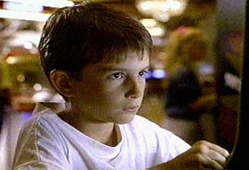

Welcome to the site all about Jimmy Woods, the amazing and talented boy genius who escaped from his mental institution in Roosevelt, Utah with his brother to compete in a video game tournament in Los Angeles, CA. Jimmy's strength and determination throughout the undertaking is inspiring, and hopefully it will inspire you to take video game-related travel in your very near future.
Jimmy's journey actually does not begin with Jimmy at all. It begins with a catastrophic incident years earlier involving his twin sister, Jennifer. Jennifer and Jimmy loved to play together, particularly outside. Well, one day, Jennifer went a little too close to the river near their home, and she tragically fell in and drowned. Don't ask how this happened, as most people do not know. Don't ask why this happened, as most people do not know. Just know that it definitely did happen. Since that fateful day, Jimmy was not the same. He refused to talk about the incident, and he carried around a red lunchbox containing keepsakes and memories of his beloved sister.
Being as such, his parents decided to put him in a home for disturbed children. That is, until his older brother, Corey, snuck in and snatched him up. In their effort to run far away from the family and prove that Jimmy did not actually belong in a home, Corey and Jimmy did the next logical thing -- travel across the country to compete in the Video Armageddon!
Along the way, the brothers befriend a street-smart girl named Haley. Her sweet talkin', business savvy lifestyle teach the boys about the high stakes and hard life of arcade gambling and life on the road. Haley's mother was from Reno and reportedly had great legs, by the way. Together, and with the help of Spankey the truck driver, Haley, Jimmy and Corey eventually made it to Los Angeles, only to discover the tournament was introducing a brand new game: Super Mario Brothers 3!! This didn't stop boy-wonder Jimmy. He was truly amazing. Some would say he was a "wizard" at gameplay. Jimmy won the tournament, beating out his rival, Lukas Barton, who was a master with the Power Glove.